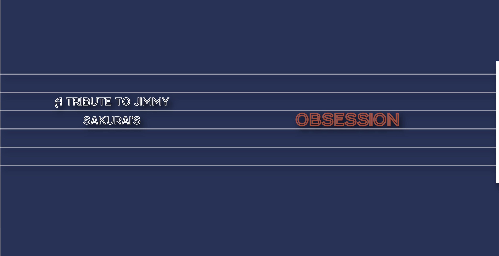
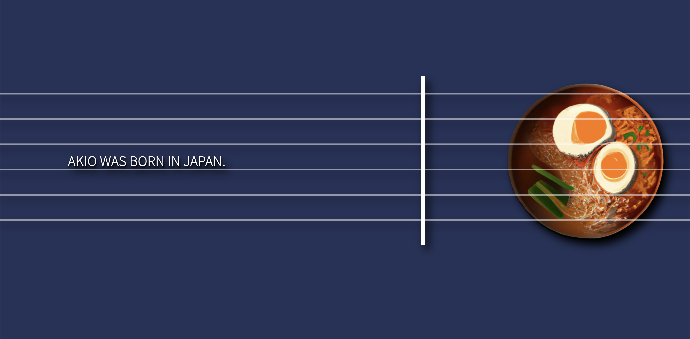

JIMMY SAKURAI
In 2019, I watched a movie that blew my mind.
It was about a japanese guy called Akio Sakurai,
who became obsessed with the legendary guitar player from Led Zeppelin, Jimmy Page.
I don't mean he-bought-all-the-vinyls obsessed, oh no.
We're talking about someone who started dressing up like him.
The resemblance was so powerful, that he became known as Mr Jimmy.
During this project, I had a sudden realization:
I too, became obsessed. With him.
EXPERIENCE
I wanted to tell his story as an experience, which is why I decided to build a website that not only looked like a guitar, but that could also be played like one.
DESIGN
The site is as minimalistic as possible, and allows the user to enjoy Akio's story in a playful way.
Try the final product here.